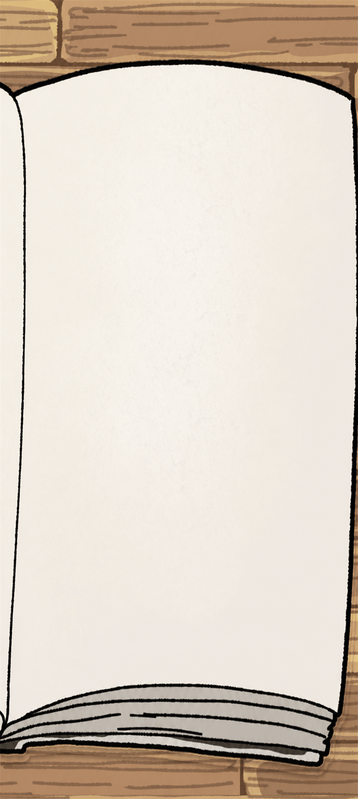

DRAWER VILLAGE REPORT
통계 보고서
마을과 캐릭터의 생활을 한눈에 살펴봐요.
전체
서랍마을
12
두번째 마을
4
마을 수
2
곳
건물 수
14
개
캐릭터 수
12
명
AGE · GENDER
연령대와 성비
전체 마을
보고서 다운로드
7페이지 배치

화장 정도
스킨케어만
정하지 않음
선택
성형·외형 의료 시술
설정하지 않음
정하지 않음
선택
패션
스타일링에 능숙함
의상 태그 선택
선택
평소 외모 관리
기본적으로 단정하게
액세서리 착용
착용함
미용실 방문 빈도
자동 · 설정에 맞춤
옷을 고르는 기준
가격
옷가게 방문 빈도
자동 · 설정에 맞춤
유행 민감도
필요한 것만 따름
신발
구두